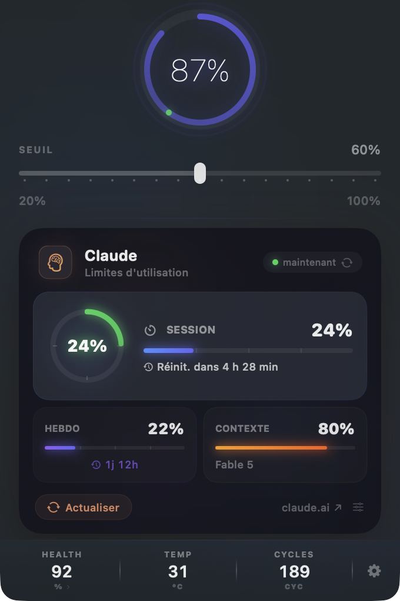
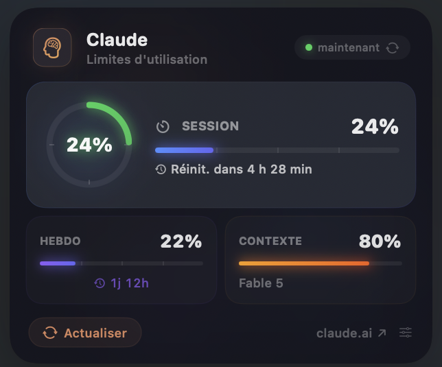

Beta ouverte — macOS 14+
L'outil Mac pour
les devs Claude.
Suivi limites Claude, dictée vocale locale, contrôle batterie, Focus IA auto. Cinq utilitaires en un, dans votre menu bar.
Suivi limites Claude, dictée vocale locale, contrôle batterie, Focus IA auto. Cinq utilitaires en un, dans votre menu bar.
Chaque feature est conçue pour les développeurs qui poussent leur MacBook avec des outils IA.
Seuil de charge 20-100% via SMC. Hystérésis configurable. Pause thermique automatique quand la température monte.
SMC · XPC · RootVos limites en temps réel : session (5h), hebdomadaire, remplissage du contexte. Lu depuis le flux officiel de Claude Code, en local.
Claude Code · statusLine · LocalWhisper large-v3 local. Dictez avec Ctrl+Option+Space, le texte est collé automatiquement. Zéro cloud.
WhisperKit · VAD · LocalS'active automatiquement pendant vos sessions Claude/Cursor. Pause Spotlight, Time Machine, veille.
IOKit · Auto-detectSanté %, cycles, température, historique de capacité. Estimez la durée de vie restante de votre batterie.
IOKit · Charts · HistoryConçu pour ne jamais quitter la menu bar. Discret, rapide, natif.


macOS 26.4 a ajouté le charge limit natif. PowerGuard fait ça + 4 choses qu'Apple ne fait pas.
| PowerGuard | macOS 26.4 | AlDente Pro | BatFi | |
|---|---|---|---|---|
| Charge limit 20-100% | ✓ | 80-100% | ✓ | ✓ |
| Suivi limites Claude | ✓ | — | — | — |
| Voice-to-Text Whisper local | ✓ | — | — | — |
| Focus IA auto (AI sessions) | ✓ | — | — | — |
| Pause thermique | ✓ | — | ✓ | Stats only |
| Graphiques santé batterie | ✓ | — | ✓ | ✓ |
| Widget macOS | ✓ | — | — | — |
| Support Intel Macs | ✓ | ✓ | ✓ | M1+ only |
| Prix | 19.99€ | Gratuit | 14.49€/an | 10€ |
| Sans abonnement | ✓ | ✓ | Abonnement | ✓ |
Téléchargez le DMG, glissez dans Applications. Le helper s'installe automatiquement.
→Choisissez votre seuil de charge (60% recommandé). Connectez votre compte Claude.
→PowerGuard tourne en arrière-plan. Votre batterie est protégée, vos limites sont visibles.
Achat unique. Pas d'abonnement. 1 an de mises à jour inclus.
Téléchargez le DMG, glissez PowerGuard dans Applications. Les mises à jour arrivent ensuite automatiquement.
macOS 14+ · Apple Silicon + Intel · Notarisée par Apple